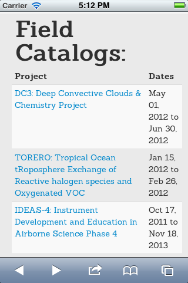

Browser-side Field-Catalog 2.0:
HTML5, Responsive Web Design, Twitter Bootstrap
Catalog-2 Requirements
Replace Field-Catalog 1
- clone-and-patch workflow
- each project has its own:
- database
- code base
- static HTML
- perl CGIs
Catalog-2 Requirements
Field-Catalog 1: Catalogs
% ls /net/web/catalog/html/
1 catalog.html fastex/ index.html.20111219 predict_catalog_earth@ testit
ace/ catalog_projects.out favicon.ico index.html.save rainex/ tmp/
ace-asia/ cat.html fc/ index.old.html ramadda1.3/ torero/
adele_sprite/ cat_table.html fcicons/ indoex/ ramadda1.3.rm/ torero_catalog_earth@
amma/ chat/ field_catalog.sh* itop_2009/ ramadda1.3.zip tparc@
bamex/ contacts/ front/ itop_2010/ ramadda_old/ tparc_2007/
banner.html css/ ge.html itop_2010_prelim/ rico/ tparc_2008/
base/ cupido/ ge.html~ ix.html robots.txt tparc.rm/
best/ data/ gif/ jasmine/ salljex/ trex/
best_hly-08-02/ dc3@ hippo/ jja-ws/ sbi/ trex.rm/
best_hly-08-03/ dc3_2011/ hippo2/ js/ sbi_hly-02-01/ vocals/
best_hly-09-02/ dc3_2011.rm/ hippo3/ lakeice/ sbi_hly-02-03/ vortex2_2009/
best_kn195-10/ dc3_2012@ hippo4/ map/ sbi_hly-04-02/ vortex2_2010/
best_kn195-10.save/ dc3_2012_dev@ hippo5/ milagro/ sbi_hly-04-03/ wms-ops@
best_psea-10-01@ dc3_catalog_earth@ hiwc@ milagro.mark/ sbi_nbp03-04a/ wrf-2004/
best_sea-10-01/ documentation/ hiwc_2013@ movie/ sheba/ wrf-2005/
best_summer-09@ documentation.rm/ hold/ name/ skeleton/ wrf_2006/
best_tn249/ du.out ice_l/ name_2003/ snorman/ wrf-2006@
best_tn249.orig/ du.runit ice-l@ pacdex/ start08@ wrf_2007/
best_tn249.save/ dwfe/ ice-t/ pacdex_hiaper/ start_08/ wrf_2008/
best_tn250/ dycoms/ ice-t_catalog_earth@ pase/ stratus/
best_tn250.orig/ dynamo/ ihop/ plows_08-09/ svn/
best_tn250.save/ dynamo_catalog_earth@ index.html plows_09-10/ table.html
cases99/ epic/ index.html.20091029 post/ test/
catalog-admin-scripts/ eventlog@ index.html.20110913 predict/ test1/Catalog-2 Requirements
Field-Catalog 1: DC3 Catalog
% ls dc3_2012/
alt.css earch/ index.20120630.html main.css photos/ scripts/
alt.html excludes indexes_old/ map/ play_panel state/
bin/ ftp_monitor/ index.html missions/ radar/ stations/
calendar.html ge/ index.html~ model/ removed_products/ test.html
clock/ gif/ index_vtx2.html navigation.html report/ upload_files/
Clock.class head.html ix.html oldfiles/ research/
data/ images/ js/ ops/ rss_feeds/
display_panel/ index.20120629.html low_bandwidth/ other/ science/Catalog 2 Requirements
many projects:
- single database
- single code-base
Catalog 2 Requirements
per-project customization:
views (HTML)
- banners
- footers
- sub-pages:
- home page
- tools & links
- etc.
Catalog 2 Requirements
per-project customization:
- style (CSS)
Catalog 2 Requirements
browser support
- modern desktop browsers:
- Chrome
- Firefox
- Safari
- etc.
Catalog 2 Requirements
browser support
- mobile browsers:
- Android
- iOS / Mobile Safari
- phone and tablet form factors
- not just works ok, but works well
Catalog 2 Objectives
- use contemporary technologies and techniques
- Field Catalog shouldn't look old and dated
- off-load heavy lifting to third-party libraries and frameworks where possible
- don't reinvent the wheel
- lots of smart and talented folks have done this before and well
Catalog 2 Objectives
DRY: Don't Repeat Yourself
- minimize / eliminate duplication of code
- where possible, views should be write once, run anywhere:
- don't write form-factor-specific views:
- desktop
- phone
- tablet
- write one view that responds to device form factor dynamically
- don't write form-factor-specific views:

HTML5 Background: HTML
- born in 1990
- implementation of SGML
- blessed as HTML4 in 1997
- ad-hoc
- fault-tolerant
- e.g. auto-close
<td>if</td>isn't provided
- e.g. auto-close
HTML5 Background: XHTML
- implementation of XML
- valid XHTML == valid XML
- 1.0: 2000
- 1.1: 2001
- attempt @ standardization
- strict: parse error stops document processing
HTML5 Background: Living Standard
- The concept of a living standard is that it is never complete and is always being updated and improved
- "moving target"
HTML5 Background
- supercedes:
- HTML 4
- XHTML 1
- DOM Level 2 HTML
HTML5 Background
- attempts to replace
- ad-hoc and non-standard APIs
- proprietary plugins
- e.g. Adobe Flash
HTML5 New Features
- media elements:
<video><audio><canvas>- SVG
- MathML
HTML5 New Features
semantic content identifiers:
<section><article><header><nav>
DOM now part of HTML spec
HTML5 New Features: media queries
query device display properties via CSS3
@media (min-width:500px) { // css }
@media (max-width:499px) { // narrow-screen css }
@media (orientation: portrait) { // css }HTML5 New Features: browser support
not yet an official standard, so no browsers completely support all HTML5 features
supporting > 50% of current HTML5 features:
- Chome 6+
- Firefox 10+
- Safari 5+
- Internet Explorer 10+
- Mobile Safari (iOS) 4.2+
- Android Browser: 3.0+
by-feature support: http://caniuse.com
Bootstrap
Sleek, intuitive, and powerful front-end framework for faster and easier web development. - http://twitter.github.com/bootstrap/
Bootstrap
A framework of CSS and Javascript components implementing common web-design patterns
Easy to make things look nice by default
Bootstrap
Developed by employees, @mdo and @fat, @ Twitter for internal tools and Open-Sourced for users beyond Twitter
@mdo and @fat have left Twitter, and Bootstrap will drop the "Twitter" prefix w/ version 3.0
Bootstrap Development
- 3000+ commits in 20 months
- github.com/twitter/bootstrap/issues: 125 open, 7707 closed
- 270+ contributors
Bootstrap: layout systems
- defined-width grid, pixels, constant
- fluid grid, percents, scales w/ browser size
- responsive-design hooks
Bootstrap: CSS enhancements
consistent / better-than-default:
- typography
- forms
- buttons
- image helpers
- icons
Bootstrap: Components
- dropdown menus
- button groups and dropdown menus
- navigation and navbar elements
- breadcrumbs
- pagination links
- alerts
- progress bars
Bootstrap: JavaScript
- requires jQuery
- like Bootstrap-specific jQuery UI
- available as plugins
Bootstrap: JavaScript Plugins
- modal windows
- tooltips
- popovers
- alerts dismissal
- buttons
- change state
- state-change-based callbacks
- collapse
- etc.
Responsive Design
Responsive web design (RWD) is a web design approach aimed at crafting sites to provide an optimal viewing experience—easy reading and navigation with a minimum of resizing, panning, and scrolling—across a wide range of devices (from desktop computer monitors to mobile phones). - http://en.wikipedia.org/wiki/Responsive_web_design
Responsive Design Elements
- dynamic CSS based on media queries of device display properties
- fluid grid based on percentages
- fluid image sizes based on percentages
Responsive Design
write once, display anywhere
- desktops
- phones
- tablets
Responsive Design
- When done properly, responsive web pages look nice and work well on - variety of devices and form factors.
Responsive Bootstrap
Bootstrap's responsive-design CSS takes care of a lot of this:
<link href="bootstrap-responsive.css"
media="screen"
rel="stylesheet"
type="text/css" />=> responsive magic
Responsive Bootstrap
- fluid grid elements "stack" when width is constrained
- navbar collapses to a dropdown menu
provides easily accessed utility classes:
.visible-phone/.hidden-phone:<768 px.visible-tablet/.hidden-tablet:768-979 px.visible-desktop/.hidden-desktop:>979 px
Responsive Viewport
- By default, mobile browsers try to mimic desktop display
- this results in pages scaled down to fix full web page onto a small mobile display
- Apple implemented hooks to a
viewportmeta tag - Allows assignment of page width, based on pixels, device width, scaling, etc.
Responsive Viewport
Default, no viewport tag:

Responsive Viewport
Viewport tagged
<meta content='width=device-width, initial-scale=1'
name='viewport'>
Demo
Enough Talk!

Thanks!
Questions?